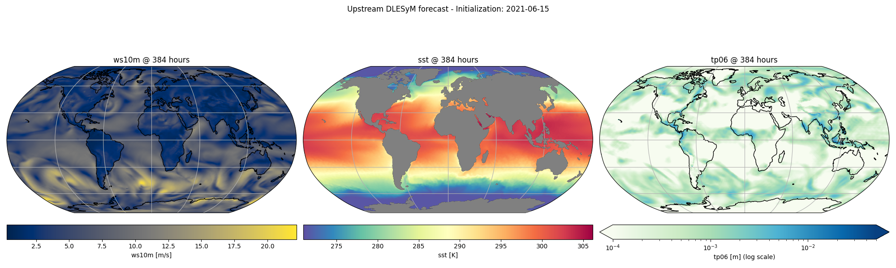

Note
Go to the end to download the full example code.
Running the DLESyM ISCCP-ERA5 Model#
Coupled inference with the upstream DLESyM checkpoints, including precipitation.
This example demonstrates the upstream DLESyM model distributed by the
AtmosSci-DLESM/DLESyM group
(the University of Washington team behind Cresswell-Clay et al. 2024). It shares
the coupled atmosphere/ocean HEALPix architecture of the base
earth2studio.models.px.DLESyM model, but differs in a few ways that
are worth highlighting:
The atmosphere carries an outgoing longwave radiation (OLR) channel. The model was trained on ISCCP-distributed OLR, so the wrapper accepts ERA5
ttrand applies a per-day-of-year moment-matching transform to convert it to OLR internally (controlled by theuse_ttrflag).A separate
earth2studio.models.dx.DLESyMv0_ISCCP_ERA5Precipdiagnostic predicts 6-hourly accumulated precipitation (tp06) from the full coupled state.
In this example you will learn:
How to instantiate the upstream prognostic and precipitation models
How the
ttr-> OLR transform shows up in the input/output variable setsHow to run a coupled forecast with the lat/lon convenience wrapper
How to chain the precipitation diagnostic off the prognostic output
# /// script
# dependencies = [
# "earth2studio[dlesym] @ git+https://github.com/NVIDIA/earth2studio.git@0.16.0",
# "cartopy",
# ]
# ///
Set Up#
As with the base DLESyM model, the upstream checkpoints run on a HEALPix
nside=64 grid internally and there are two ways to drive them:
Use
earth2studio.models.px.DLESyMv0_ISCCP_ERA5LatLon. This variant accepts ERA5 inputs on the lat/lon grid, regrids them to HEALPix internally, and returns lat/lon outputs. This is the recommended entry point and is what we use throughout this example.Use
earth2studio.models.px.DLESyMv0_ISCCP_ERA5directly with HEALPix inputs, handling the regridding and derived-variable preparation yourself (see the base DLESyM example for that lower-level pattern).
import os
os.makedirs("outputs", exist_ok=True)
from dotenv import load_dotenv
load_dotenv() # TODO: make common example prep function
import numpy as np
import torch
from earth2studio.data import ARCO
from earth2studio.data.utils import fetch_data
from earth2studio.models.dx import DLESyMv0_ISCCP_ERA5Precip
from earth2studio.models.px import DLESyMv0_ISCCP_ERA5LatLon
device = "cuda"
if not torch.cuda.is_available():
raise RuntimeError("GPU/CUDA required for DLESyM")
# Create the data source
data = ARCO()
# Load the coupled prognostic (lat/lon variant) and the precip diagnostic.
package = DLESyMv0_ISCCP_ERA5LatLon.load_default_package()
model = DLESyMv0_ISCCP_ERA5LatLon.load_model(package).to(device)
# The prognostic output is already in OLR space, so we load the precip
# diagnostic with ``use_ttr=False`` -- no further TTR -> OLR transform is needed
# when chaining off the model's own output. (Pass ``use_ttr=True`` to run the
# diagnostic standalone from an ERA5 initial condition instead.)
precip = DLESyMv0_ISCCP_ERA5Precip.load_model(package, use_ttr=False).to(device)
Downloading config.yaml: 0%| | 0.00/2.42k [00:00<?, ?B/s]
Downloading config.yaml: 100%|██████████| 2.42k/2.42k [00:00<00:00, 11.9kB/s]
Downloading config.yaml: 100%|██████████| 2.42k/2.42k [00:00<00:00, 11.9kB/s]
Downloading atmos_model_0.mdlus: 0%| | 0.00/13.4M [00:00<?, ?B/s]
Downloading atmos_model_0.mdlus: 74%|███████▍ | 10.0M/13.4M [00:00<00:00, 12.7MB/s]
Downloading atmos_model_0.mdlus: 100%|██████████| 13.4M/13.4M [00:00<00:00, 16.5MB/s]
Downloading ocean_model_0.mdlus: 0%| | 0.00/2.97M [00:00<?, ?B/s]
Downloading ocean_model_0.mdlus: 100%|██████████| 2.97M/2.97M [00:00<00:00, 6.26MB/s]
Downloading ocean_model_0.mdlus: 100%|██████████| 2.97M/2.97M [00:00<00:00, 6.24MB/s]
Downloading hpx_lat.npy: 0%| | 0.00/384k [00:00<?, ?B/s]
Downloading hpx_lat.npy: 100%|██████████| 384k/384k [00:00<00:00, 963kB/s]
Downloading hpx_lat.npy: 100%|██████████| 384k/384k [00:00<00:00, 960kB/s]
Downloading hpx_lon.npy: 0%| | 0.00/384k [00:00<?, ?B/s]
Downloading hpx_lon.npy: 100%|██████████| 384k/384k [00:00<00:00, 871kB/s]
Downloading hpx_lon.npy: 100%|██████████| 384k/384k [00:00<00:00, 869kB/s]
Downloading land_sea_mask.npy: 0%| | 0.00/192k [00:00<?, ?B/s]
Downloading land_sea_mask.npy: 100%|██████████| 192k/192k [00:00<00:00, 577kB/s]
Downloading land_sea_mask.npy: 100%|██████████| 192k/192k [00:00<00:00, 575kB/s]
Downloading topography.npy: 0%| | 0.00/192k [00:00<?, ?B/s]
Downloading topography.npy: 100%|██████████| 192k/192k [00:00<00:00, 604kB/s]
Downloading topography.npy: 100%|██████████| 192k/192k [00:00<00:00, 601kB/s]
Downloading era5_ttr_doy_stats_hpx64.nc: 0%| | 0.00/137M [00:00<?, ?B/s]
Downloading era5_ttr_doy_stats_hpx64.nc: 7%|▋ | 10.0M/137M [00:00<00:10, 12.2MB/s]
Downloading era5_ttr_doy_stats_hpx64.nc: 15%|█▍ | 20.0M/137M [00:00<00:04, 24.7MB/s]
Downloading era5_ttr_doy_stats_hpx64.nc: 22%|██▏ | 30.0M/137M [00:01<00:03, 36.7MB/s]
Downloading era5_ttr_doy_stats_hpx64.nc: 29%|██▉ | 40.0M/137M [00:01<00:03, 32.0MB/s]
Downloading era5_ttr_doy_stats_hpx64.nc: 36%|███▋ | 50.0M/137M [00:01<00:02, 40.1MB/s]
Downloading era5_ttr_doy_stats_hpx64.nc: 44%|████▎ | 60.0M/137M [00:01<00:01, 49.1MB/s]
Downloading era5_ttr_doy_stats_hpx64.nc: 51%|█████ | 70.0M/137M [00:02<00:01, 37.7MB/s]
Downloading era5_ttr_doy_stats_hpx64.nc: 58%|█████▊ | 80.0M/137M [00:02<00:01, 46.0MB/s]
Downloading era5_ttr_doy_stats_hpx64.nc: 66%|██████▌ | 90.0M/137M [00:02<00:00, 54.0MB/s]
Downloading era5_ttr_doy_stats_hpx64.nc: 73%|███████▎ | 100M/137M [00:02<00:00, 61.1MB/s]
Downloading era5_ttr_doy_stats_hpx64.nc: 80%|████████ | 110M/137M [00:02<00:00, 61.3MB/s]
Downloading era5_ttr_doy_stats_hpx64.nc: 87%|████████▋ | 120M/137M [00:02<00:00, 67.3MB/s]
Downloading era5_ttr_doy_stats_hpx64.nc: 95%|█████████▍| 130M/137M [00:02<00:00, 72.3MB/s]
Downloading era5_ttr_doy_stats_hpx64.nc: 100%|██████████| 137M/137M [00:03<00:00, 47.6MB/s]
Downloading isccp_olr_doy_stats_hpx64.nc: 0%| | 0.00/137M [00:00<?, ?B/s]
Downloading isccp_olr_doy_stats_hpx64.nc: 7%|▋ | 10.0M/137M [00:00<00:11, 11.3MB/s]
Downloading isccp_olr_doy_stats_hpx64.nc: 15%|█▍ | 20.0M/137M [00:01<00:05, 23.2MB/s]
Downloading isccp_olr_doy_stats_hpx64.nc: 22%|██▏ | 30.0M/137M [00:01<00:03, 35.0MB/s]
Downloading isccp_olr_doy_stats_hpx64.nc: 29%|██▉ | 40.0M/137M [00:01<00:02, 45.9MB/s]
Downloading isccp_olr_doy_stats_hpx64.nc: 36%|███▋ | 50.0M/137M [00:01<00:01, 55.6MB/s]
Downloading isccp_olr_doy_stats_hpx64.nc: 44%|████▎ | 60.0M/137M [00:01<00:01, 63.6MB/s]
Downloading isccp_olr_doy_stats_hpx64.nc: 51%|█████ | 70.0M/137M [00:01<00:01, 60.4MB/s]
Downloading isccp_olr_doy_stats_hpx64.nc: 58%|█████▊ | 80.0M/137M [00:01<00:00, 67.2MB/s]
Downloading isccp_olr_doy_stats_hpx64.nc: 66%|██████▌ | 90.0M/137M [00:01<00:00, 72.7MB/s]
Downloading isccp_olr_doy_stats_hpx64.nc: 73%|███████▎ | 100M/137M [00:02<00:00, 76.9MB/s]
Downloading isccp_olr_doy_stats_hpx64.nc: 80%|████████ | 110M/137M [00:02<00:00, 80.1MB/s]
Downloading isccp_olr_doy_stats_hpx64.nc: 87%|████████▋ | 120M/137M [00:02<00:00, 82.0MB/s]
Downloading isccp_olr_doy_stats_hpx64.nc: 95%|█████████▍| 130M/137M [00:02<00:00, 84.5MB/s]
Downloading isccp_olr_doy_stats_hpx64.nc: 100%|██████████| 137M/137M [00:02<00:00, 57.2MB/s]
Downloading precip_model_0.mdlus: 0%| | 0.00/5.45M [00:00<?, ?B/s]
Downloading precip_model_0.mdlus: 100%|██████████| 5.45M/5.45M [00:00<00:00, 13.8MB/s]
Downloading precip_model_0.mdlus: 100%|██████████| 5.45M/5.45M [00:00<00:00, 13.7MB/s]
Inspecting the Variable Sets#
Note that ttr appears in the prognostic input variables (the wrapper
converts it to OLR internally), while the output variables report rlut
(OLR) – the model variable space. The precip diagnostic consumes the full
10-variable coupled state and emits a single tp06 field.
in_coords = model.input_coords()
out_coords_vars = model.output_coords(in_coords)["variable"]
print("Prognostic input variables: ", in_coords["variable"])
print("Prognostic output variables:", out_coords_vars)
print("Precip input variables: ", precip.input_coords()["variable"])
Prognostic input variables: ['z500' 'z1000' 't2m' 'tcwv' 't850' 'z250' 'ttr' 'sst' 'u10m' 'v10m'
'z300' 'z700']
Prognostic output variables: ['z500' 'tau300-700' 'z1000' 't2m' 'tcwv' 't850' 'z250' 'ws10m' 'rlut'
'sst']
Precip input variables: ['z500' 'tau300-700' 'z1000' 't2m' 'tcwv' 't850' 'z250' 'rlut' 'ws10m'
'sst']
Making a Coupled Prediction#
We fetch an ERA5 initial condition on the lat/lon grid and run the model
directly. As with the base DLESyM model, the atmosphere is predicted every
6 hours while the ocean only advances every 48 hours, so we use the
retrieve_valid_* helpers to select the valid lead times for each component.
ic_date = np.datetime64("2021-06-15")
x, coords = fetch_data(
source=data,
time=np.array([ic_date]),
variable=np.array(in_coords["variable"]),
lead_time=in_coords["lead_time"],
device=device,
)
# Run a single coupled step (lat/lon in, lat/lon out)
y, y_coords = model(x, coords)
y_atmos, y_atmos_coords = model.retrieve_valid_atmos_outputs(y, y_coords)
y_ocean, y_ocean_coords = model.retrieve_valid_ocean_outputs(y, y_coords)
print(
"Atmosphere outputs (variables, lead_time [hrs]):",
y_atmos_coords["variable"],
y_atmos_coords["lead_time"].astype("timedelta64[h]"),
)
print(
"Ocean outputs (variables, lead_time [hrs]):",
y_ocean_coords["variable"],
y_ocean_coords["lead_time"].astype("timedelta64[h]"),
)
2026-06-29 18:02:29.282 | DEBUG | earth2studio.data.arco:_async_init:128 - Using Multi-Storage Client for ARCO data access
Fetching ARCO data: 0%| | 0/8 [00:00<?, ?it/s]
2026-06-29 18:02:30.088 | DEBUG | earth2studio.data.utils:_make_local_details:1070 - Copying /gcp-public-data-arco-era5/ar/full_37-1h-0p25deg-chunk-1.zarr-v3/top_net_thermal_radiation/1064592.0.0 to local cache
Fetching ARCO data: 0%| | 0/8 [00:00<?, ?it/s]
Fetching ARCO data: 12%|█▎ | 1/8 [00:00<00:00, 7.79it/s]
Fetching ARCO data: 75%|███████▌ | 6/8 [00:00<00:00, 22.25it/s]
Fetching ARCO data: 100%|██████████| 8/8 [00:00<00:00, 12.67it/s]
Fetching ARCO data: 0%| | 0/8 [00:00<?, ?it/s]
2026-06-29 18:02:30.721 | DEBUG | earth2studio.data.utils:_make_local_details:1070 - Copying /gcp-public-data-arco-era5/ar/full_37-1h-0p25deg-chunk-1.zarr-v3/top_net_thermal_radiation/1064598.0.0 to local cache
Fetching ARCO data: 0%| | 0/8 [00:00<?, ?it/s]
Fetching ARCO data: 75%|███████▌ | 6/8 [00:00<00:00, 22.99it/s]
Fetching ARCO data: 100%|██████████| 8/8 [00:00<00:00, 18.74it/s]
Fetching ARCO data: 0%| | 0/8 [00:00<?, ?it/s]
Fetching ARCO data: 12%|█▎ | 1/8 [00:00<00:00, 9.25it/s]
2026-06-29 18:02:31.157 | DEBUG | earth2studio.data.utils:_make_local_details:1070 - Copying /gcp-public-data-arco-era5/ar/full_37-1h-0p25deg-chunk-1.zarr-v3/top_net_thermal_radiation/1064604.0.0 to local cache
Fetching ARCO data: 12%|█▎ | 1/8 [00:00<00:00, 9.25it/s]
Fetching ARCO data: 75%|███████▌ | 6/8 [00:00<00:00, 21.97it/s]
Fetching ARCO data: 100%|██████████| 8/8 [00:00<00:00, 10.98it/s]
Fetching ARCO data: 100%|██████████| 8/8 [00:00<00:00, 12.20it/s]
Fetching ARCO data: 0%| | 0/8 [00:00<?, ?it/s]
2026-06-29 18:02:31.788 | DEBUG | earth2studio.data.utils:_make_local_details:1070 - Copying /gcp-public-data-arco-era5/ar/full_37-1h-0p25deg-chunk-1.zarr-v3/top_net_thermal_radiation/1064610.0.0 to local cache
Fetching ARCO data: 0%| | 0/8 [00:00<?, ?it/s]
Fetching ARCO data: 38%|███▊ | 3/8 [00:00<00:00, 29.99it/s]
Fetching ARCO data: 75%|███████▌ | 6/8 [00:00<00:00, 19.41it/s]
Fetching ARCO data: 100%|██████████| 8/8 [00:00<00:00, 14.10it/s]
Fetching ARCO data: 0%| | 0/8 [00:00<?, ?it/s]
2026-06-29 18:02:32.395 | DEBUG | earth2studio.data.utils:_make_local_details:1070 - Copying /gcp-public-data-arco-era5/ar/full_37-1h-0p25deg-chunk-1.zarr-v3/top_net_thermal_radiation/1064616.0.0 to local cache
Fetching ARCO data: 0%| | 0/8 [00:00<?, ?it/s]
Fetching ARCO data: 75%|███████▌ | 6/8 [00:00<00:00, 21.83it/s]
Fetching ARCO data: 100%|██████████| 8/8 [00:00<00:00, 12.55it/s]
Fetching ARCO data: 0%| | 0/8 [00:00<?, ?it/s]
2026-06-29 18:02:33.087 | DEBUG | earth2studio.data.utils:_make_local_details:1070 - Copying /gcp-public-data-arco-era5/ar/full_37-1h-0p25deg-chunk-1.zarr-v3/top_net_thermal_radiation/1064622.0.0 to local cache
Fetching ARCO data: 0%| | 0/8 [00:00<?, ?it/s]
Fetching ARCO data: 75%|███████▌ | 6/8 [00:00<00:00, 23.47it/s]
Fetching ARCO data: 100%|██████████| 8/8 [00:00<00:00, 16.03it/s]
Fetching ARCO data: 0%| | 0/8 [00:00<?, ?it/s]
2026-06-29 18:02:33.534 | DEBUG | earth2studio.data.utils:_make_local_details:1070 - Copying /gcp-public-data-arco-era5/ar/full_37-1h-0p25deg-chunk-1.zarr-v3/top_net_thermal_radiation/1064628.0.0 to local cache
Fetching ARCO data: 0%| | 0/8 [00:00<?, ?it/s]
Fetching ARCO data: 75%|███████▌ | 6/8 [00:00<00:00, 20.73it/s]
Fetching ARCO data: 100%|██████████| 8/8 [00:00<00:00, 16.82it/s]
Fetching ARCO data: 0%| | 0/8 [00:00<?, ?it/s]
2026-06-29 18:02:34.019 | DEBUG | earth2studio.data.utils:_make_local_details:1070 - Copying /gcp-public-data-arco-era5/ar/full_37-1h-0p25deg-chunk-1.zarr-v3/top_net_thermal_radiation/1064634.0.0 to local cache
Fetching ARCO data: 0%| | 0/8 [00:00<?, ?it/s]
Fetching ARCO data: 75%|███████▌ | 6/8 [00:00<00:00, 22.92it/s]
Fetching ARCO data: 100%|██████████| 8/8 [00:00<00:00, 12.39it/s]
Fetching ARCO data: 0%| | 0/8 [00:00<?, ?it/s]
2026-06-29 18:02:34.719 | DEBUG | earth2studio.data.utils:_make_local_details:1070 - Copying /gcp-public-data-arco-era5/ar/full_37-1h-0p25deg-chunk-1.zarr-v3/top_net_thermal_radiation/1064640.0.0 to local cache
Fetching ARCO data: 0%| | 0/8 [00:00<?, ?it/s]
Fetching ARCO data: 75%|███████▌ | 6/8 [00:00<00:00, 23.39it/s]
Fetching ARCO data: 100%|██████████| 8/8 [00:00<00:00, 15.63it/s]
Atmosphere outputs (variables, lead_time [hrs]): ['z500' 'tau300-700' 'z1000' 't2m' 'tcwv' 't850' 'z250' 'ws10m' 'rlut'] [ 6 12 18 24 30 36 42 48 54 60 66 72 78 84 90 96]
Ocean outputs (variables, lead_time [hrs]): ['sst'] [48 96]
Rolling Out to a 16-Day Forecast#
A single coupled step advances 96 hours (4 days), so to reach a 16-day lead time we roll the iterator forward four steps. The iterator yields the initial condition first, then one coupled step per iteration; we keep the final step and re-select the valid atmosphere/ocean outputs from it.
forecast_days = 16
hours_per_step = int(model.atmos_output_times[-1] / np.timedelta64(1, "h")) # 96h
n_steps = int(np.ceil(forecast_days * 24 / hours_per_step))
model_iter = model.create_iterator(x, coords)
next(model_iter) # initial condition
for _ in range(n_steps):
y, y_coords = next(model_iter)
y_atmos, y_atmos_coords = model.retrieve_valid_atmos_outputs(y, y_coords)
y_ocean, y_ocean_coords = model.retrieve_valid_ocean_outputs(y, y_coords)
print(
"Final forecast lead time:",
y_coords["lead_time"][-1].astype("timedelta64[h]"),
)
Final forecast lead time: 384 hours
Diagnosing Precipitation#
The precip diagnostic predicts 6-hourly accumulated precipitation from two
consecutive 6-hourly atmosphere timesteps of the full coupled state. The
16-day prognostic output y already contains exactly the 10 coupled
variables the diagnostic expects (in OLR / rlut space), so we take its
last two atmosphere lead times as the [-6, 0] history window and regrid
them onto the HEALPix grid using the prognostic’s regridding helpers.
The prognostic output carries the coupled variables in the prognostic’s
channel order, which differs from the order the precip diagnostic expects
(e.g. ws10m and rlut are swapped). Reorder the variable axis to match
the diagnostic’s input variables before feeding it.
precip_vars = list(precip.input_coords()["variable"])
y_vars = list(y_coords["variable"])
var_order = [y_vars.index(v) for v in precip_vars]
# Last two atmosphere lead times form the [-6h, 0h] window relative to the
# diagnosed valid time; relative spacing is what the diagnostic validates.
precip_in = y[:, -2:][:, :, var_order]
precip_coords = y_coords.copy()
precip_coords["lead_time"] = y_coords["lead_time"][-2:]
precip_coords["variable"] = np.array(precip_vars)
# Regrid the coupled state onto HEALPix using the prognostic's regridder
precip_in_hpx = model.to_hpx(precip_in)
precip_coords_hpx = model.coords_to_hpx(precip_coords)
tp, tp_coords = precip(precip_in_hpx, precip_coords_hpx)
# Regrid the precip output back to lat/lon for plotting
tp_ll = model.to_ll(tp)
print(
"Precip output (variable, valid lead_time [hrs]):",
tp_coords["variable"],
tp_coords["lead_time"].astype("timedelta64[h]"),
)
Precip output (variable, valid lead_time [hrs]): ['tp06'] [384]
Plotting the Outputs#
We plot a forecasted atmosphere field, the ocean SST, and the diagnosed precipitation.
import cartopy.crs as ccrs
import cartopy.feature as cfeature
import matplotlib.pyplot as plt
from matplotlib.colors import LogNorm
lat = y_coords["lat"]
lon = y_coords["lon"]
atmos_var, atmos_units = "ws10m", "m/s"
ocean_var, ocean_units = "sst", "K"
atmos_idx = list(y_atmos_coords["variable"]).index(atmos_var)
ocean_idx = list(y_ocean_coords["variable"]).index(ocean_var)
plt.close("all")
projection = ccrs.Robinson()
fig, axs = plt.subplots(1, 3, subplot_kw={"projection": projection}, figsize=(20, 6))
# Atmosphere: 10m wind speed at the final atmos lead time
atmos_lead = y_atmos_coords["lead_time"][-1]
im = axs[0].pcolormesh(
lon,
lat,
y_atmos[0, -1, atmos_idx].cpu().numpy(),
transform=ccrs.PlateCarree(),
cmap="cividis",
)
axs[0].set_title(f"{atmos_var} @ {atmos_lead.astype('timedelta64[h]')}")
axs[0].coastlines()
axs[0].gridlines()
cbar = fig.colorbar(im, ax=axs[0], orientation="horizontal", pad=0.05)
cbar.set_label(f"{atmos_var} [{atmos_units}]")
# Ocean: SST at the final ocean lead time
ocean_lead = y_ocean_coords["lead_time"][-1]
im = axs[1].pcolormesh(
lon,
lat,
y_ocean[0, -1, ocean_idx].cpu().numpy(),
transform=ccrs.PlateCarree(),
cmap="Spectral_r",
)
axs[1].set_title(f"{ocean_var} @ {ocean_lead.astype('timedelta64[h]')}")
axs[1].add_feature(cfeature.LAND, color="grey", zorder=100)
axs[1].coastlines()
axs[1].gridlines()
cbar = fig.colorbar(im, ax=axs[1], orientation="horizontal", pad=0.05)
cbar.set_label(f"{ocean_var} [{ocean_units}]")
# Precip: 6-hourly accumulated precipitation on a log color scale. We pin the
# color range to a fixed physical window (0.1 mm .. 50 mm per 6 h) rather than
# auto-scaling: the log-precip inverse transform can produce a handful of
# grid-scale outliers, and an auto-scaled norm would chase those and wash out
# the real field. Values are clipped into the window for display only.
precip_lead = tp_coords["lead_time"][-1]
precip_field = np.clip(tp_ll[0, 0, 0].cpu().numpy(), 0.0, None)
vmin, vmax = 1e-4, 5e-2 # metres of accumulated precip over 6 h
im = axs[2].pcolormesh(
lon,
lat,
np.clip(precip_field, vmin, vmax),
transform=ccrs.PlateCarree(),
cmap="GnBu",
norm=LogNorm(vmin=vmin, vmax=vmax),
)
axs[2].set_title(f"tp06 @ {precip_lead.astype('timedelta64[h]')}")
axs[2].coastlines()
axs[2].gridlines()
cbar = fig.colorbar(im, ax=axs[2], orientation="horizontal", pad=0.05, extend="both")
cbar.set_label("tp06 [m] (log scale)")
plt.suptitle(f"Upstream DLESyM forecast - Initialization: {ic_date}")
plt.tight_layout()
plt.savefig("outputs/03_dlesym_climate_prediction.png")

Total running time of the script: (1 minutes 17.573 seconds)